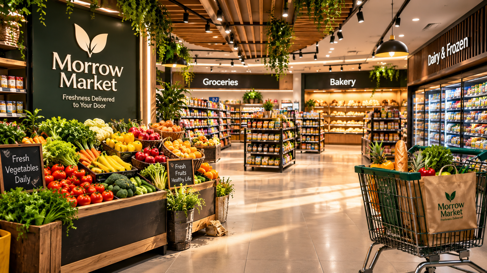

✳
Choose with care.
We look for quality, seasonality and products that earn their place on your shelf.
We started with one simple thought: buying the things you need should feel good, too.

OUR KIND OF EVERYDAY · EST. 2026Morrow is built around the little rituals that make a day: the fruit you slice in the morning, the bread you tear at dinner, the snack you share without thinking.
We're a modern neighbourhood market with an old-fashioned appreciation for good ingredients, thoughtful choices and people who care about what they bring home.
Meet your next favourite ↗Not grand gestures. Just good habits, done consistently.
We look for quality, seasonality and products that earn their place on your shelf.
Useful everyday staples, clear choices and no unnecessary fuss.
Because the best grocery list always leaves a little room for something lovely.